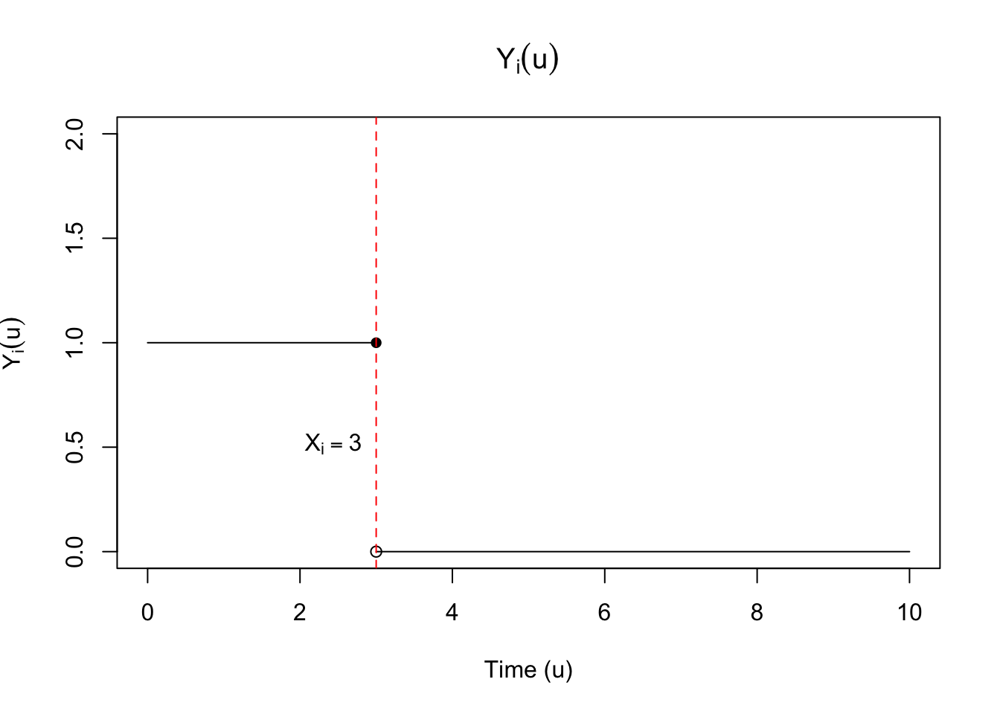
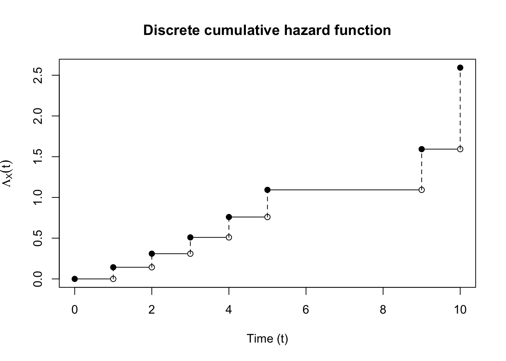

Lecture 4
1 Nonparametric estimator of survival function
1.1 Derivation of Nelson-Aalen and Kaplan-Meier estimators
When we have \((X_i, C_i) \overset{\text{iid}}{\sim} F\) such that noninformative censoring and parameter separability hold, we showed that we can write the likelihood for the survival process: \[f_\eta(t_1, \dots, t_n, \delta_1, \dots, \delta_n) = \prod_{i=1}^n \lambda_\eta(t_i)^{\delta_i} \exp\left(-\int_0^{t_i} \lambda_\eta(u) du \right).\] This can again be simplified by collecting terms inside the exponential: \[\begin{align} f_\eta(t_1, \dots, t_n, \delta_1, \dots, \delta_n) = \left(\prod_{i=1}^n \lambda_\eta(t_i)^{\delta_i}\right)\exp\left(-\sum_{i=1}^n \int_0^{t_i} \lambda_\eta(u) du \right). \end{align}\]
Let’s make a slight change to how we write the survival function. Define the indicator function \(Y(u)\) to be \[Y_i(u) = \mathbbm{1}\left(t_i \geq u\right).\] This function is left-continuous, with right-hand limits, an example of which is shown in
This allows us to rewrite our likelihood as follows: \[\begin{align} f_\eta(t_1, \dots, t_n, \delta_1, \dots, \delta_n) & = \left(\prod_{i=1}^n \lambda_\eta(t_i)^{\delta_i}\right)\exp\left(-\sum_{i=1}^n \int_0^{\infty} Y_i(u) \lambda_\eta(u) du \right)\\ & = \left(\prod_{i=1}^n \lambda_\eta(t_i)^{\delta_i}\right)\exp\left(-\int_0^{\infty} \lambda_\eta(u) \sum_{i=1}^n Y_i(u) du \right) \end{align}\] For notational convenience, we’ll define the function \(\widebar{Y}(u)\) as: \[\widebar{Y}(u) = \sum_{i=1}^n Y_i(u).\] Then our likelihood is: \[\begin{align} f_\eta(t_1, \dots, t_n, \delta_1, \dots, \delta_n) = \left(\prod_{i=1}^n \lambda_\eta(t_i)^{\delta_i}\right)\exp\left(-\int_0^{\infty} \lambda_\eta(u) \widebar{Y}(u) du \right) \end{align}\]
We can consider a nonparametric model for the hazard, estimating \(\lambda\) at each \(t_i\) as a separate parameter. An example of this is shown in Figure 2, which corresponds to the discrete survival function in

In order to evaluate the integral \[\int_0^{\infty} \lambda(u) \widebar{Y}(u) du,\] note that we can rewrite \(\lambda(t_i)\) as \[\lambda(t_i) = \Lambda(t_i) - \Lambda(t_i-),\] where \(\Lambda(t)\) is the cumulative hazard function. We’ll write as \(\lambda(u)\) as \(d\Lambda(u)\). Finally, recall that because \(S(t)\) is right-continuous, \(\Lambda(t)\) is also right-continuous.

We’ll also need a bit of integration theory from Lebesgue-Stieltjies integrals. Suppose that \(G\) is a right-continuous, monotone function on \([0,\infty)\) with countably many discontinuities at \(a_i\), and let \(dG(a_i) = G(a_i) - G(a_i-)\). Then for a measurable function \(F\) on \([0,\infty)\), the integral over a set \(B\) \[\int_B F(x) dG(x) = \sum_{i \mid a_i \in B} F(a_i) dG(a_i).\] Using these results, the integral can be evaluated to \[\int_0^{\infty} \left(\widebar{Y}(u)\right)d\Lambda(u) du = \sum_{j = 1}^{n} \lambda(t_j) \widebar{Y}(t_j)\] Let’s take the log of the expression to get a log-likelihood: \[\begin{align} \log f_\eta(t_1, \dots, t_n, \delta_1, \dots, \delta_n) & = \sum_{i=1}^n \delta_i \log (\lambda_\eta(t_i)) -\sum_{j=1}^{n} \lambda_\eta(t_j) \widebar{Y}(t_j) \end{align}\] Taking the gradient with respect to \(\lambda_\eta(t_i)\) gives \[\begin{align} \nabla \log f_\eta(t_1, \dots, t_n, \delta_1, \dots, \delta_n) & = \frac{\delta_i}{\lambda_\eta(t_i)} -\widebar{Y}(t_i). \end{align}\] Note that the Hessian is also diagonal, which implies asymptotic independence of \(\lambda(t_i)\). This is solved at \[\begin{align} \hat{\lambda}_\eta(t_i) & = \frac{\delta_i}{\widebar{Y}(t_i)} \end{align}\] This gives an expression for \(\Lambda(t)\): \[\begin{align} \Lambda^{\text{NA}}(t) = \sum_{i \mid \delta_i = 1, t_i \leq t} \frac{1}{\widebar{Y}(t_i)} \end{align} \tag{1}\] This also gives an expression for \(S(t)\): \[\begin{align} S^{\text{KM}}(t) & = \prod_{i \mid \delta_i = 1, t_i \leq t}(1 - \frac{1}{\widebar{Y}(t_i)}). \end{align} \tag{2}\] This is also known as the Kaplan-Meier estimator. An alternative expression is: \[\begin{align} \label{eq:surival-na} S^{\text{NA}}(t) & = \exp\left(-\textstyle\sum_{i \mid \delta_i = 1, t_i \leq t} \frac{1}{\widebar{Y}(t_i)}\right) \end{align}\] We can show that the cumulative hazard as implied by Equation 2 is asymptotically equivalent to Equation 1. Given \[ S_X(t) = \exp\lp-\Lambda_X(t) \rp \] \[\begin{align} \Lambda^{\text{KM}} & = - \log \left(\prod_{i \mid \delta_i = 1, t_i \leq t}(1 - \frac{1}{\widebar{Y}(t_i)}) \right)\\ & = -\sum_{i \mid \delta_i = 1, t_i \leq t}\log(1 - \frac{1}{\widebar{Y}(t_i)}) \\ & \approx \sum_{i \mid \delta_i = 1, t_i \leq t}\frac{1}{\widebar{Y}(t_i)} \end{align}\] where the last line follows from the Taylor approximation of \(\log(1 - x) \approx -x\) when \(x \approx 0\).
1.1.1 Kaplan-Meier estimator standard error
In order to get the standard errors for the Kaplan-Meier estimator, we’ll use a Taylor expansion: \[\begin{align} \log(S^{\text{KM}}(t)) \approx \log(S(t)) + \frac{1}{S(t)}(S^{\text{KM}}(t) - S(t)) \end{align}\] which leads to \[\Var{\log(S^{\text{KM}}(t))} = \frac{1}{S(t)^2}\Var{S^{\text{KM}}(t)}\] or \[\Var{S^{\text{KM}}(t)} = \Var{\log(S^{\text{KM}}(t))}S(t)^2.\] We use the plug-in estimator for \(S(t)\) here, so we get: \[\Var{S^{\text{KM}}(t)} = \Var{\log(S^{\text{KM}}(t))}(S^{\text{KM}}(t))^2.\] Now we need an expression for \(\Var{\log(S^{\text{KM}}(t))}\). First we write the log of the KM estimator: \[\begin{align} \log \hat{S}^{\text{KM}}(t) = \sum_{i \mid t_i \leq t} \log(1 - \hat{\lambda}(t_i)). \end{align}\] First we find the Taylor expansion for each term, which is justified by the fact that \((1 - \hat{\lambda}(t_i)) \approx (1 - \lambda(t_i))\) for large samples: \[\begin{align} \log(1 - \hat{\lambda}(t_i)) \approx \log(1 - \lambda(t_i)) - \frac{1}{1 - \lambda(t_i)}(\hat{\lambda}(t_i) - \lambda(t_i)) \end{align}\] Then \[\Var{\log(1 - \hat{\lambda}(t_i))} \approx \frac{1}{(1 - \lambda(t_i))^2}\Var{\hat{\lambda}(t_i)}\] We can estimate the \(\Var{\hat{\lambda}(t_i)}\) as: \[\Var{\hat{\lambda}(t_i)} = \Var{\delta_i} / \bar{Y}^2(t_i)\] Treating \(\delta_i\) as a binomial random variable with \(\bar{Y}(t_i)\) number of trials: \[\delta_i \sim \text{Binomial}(\bar{Y}(t_i), p_i)\] The variance of \(\delta_i\) is \(p_i (1 - p_i) \bar{Y}(t_i)\). Using \(\hat{\lambda}(t_i)\) as a plug-in estimator for \(p_i\) as \(\hat{\lambda}(t_i)\), this gives: \[\Var{\delta_i} = \hat{\lambda}(t_i)(1 - \hat{\lambda}(t_i)) \bar{Y}(t_i)\] Putting this together with the \(\bar{Y}^2(t_i)\) in the denominator gives the following estimate for the variance of \(\hat{\lambda}(t_i)\): \[\frac{\hat{\lambda}(t_i)(1 - \hat{\lambda}(t_i))}{\bar{Y}(t_i)}.\] Finally using the plug-in estimator for \((1 - \lambda(t_i))^2\) in the denominator of the Taylor expansion formula gives: \[\begin{align} \Var{\log(1 - \hat{\lambda}(t_i))} & \approx \frac{1}{(1 - \hat{\lambda}(t_i))^2}\frac{\hat{\lambda}(t_i)(1 - \hat{\lambda}(t_i))}{\bar{Y}(t_i)}\\ & \approx \frac{\hat{\lambda}(t_i)}{\bar{Y}(t_i)(1 - \hat{\lambda}(t_i))} \\ & \approx \frac{\delta_i}{\bar{Y}(t_i)(\bar{Y}(t_i) - \hat{\lambda}(t_i))} \end{align}\] Putting this all together along with the fact that \(\lambda(t_i) \overset{\text{asymp}}{\perp\!\!\!\perp} \lambda(t_j)\), yields what is known as Greenwood’s formula: \[\Var{S^{\text{KM}}(t)} = (S^{\text{KM}}(t))^2 \sum_{i \mid \delta_i = 1, t_i \leq t} \frac{\delta_i}{\widebar{Y}(t_i) (\widebar{Y}(t_i) - \delta_i)}.\]
1.2 Confidence intervals
If we wanted to construct asymptotic, point-wise confidence intervals for the KM estimator, we can go about it in several ways. The most straightforward way to compute confidence intervals is to directly use the estimated survival function at \(t_0\) and the standard error estimator from Greenwood’s formula. Let \(\hat{\sigma}(t)\) be \[\sqrt{\sum_{i \mid d_i = 1, t_i \leq t} \frac{d_i}{\widebar{Y}(t_i) (\widebar{Y}(t_i) - d_i)}}.\] Then our confidence interval, \(C^{\text{KM}}\), is \[\begin{align*} C^{\text{KM}} = \left(\hat{S}^{\text{KM}}(t_0) - z_{1-\alpha / 2} \hat{\sigma} \hat{S}^{\text{KM}}(t_0), \hat{S}^{\text{KM}}(t_0) + z_{1-\alpha / 2} \hat{\sigma} \hat{S}^{\text{KM}}(t_0)\right) \end{align*}\] The issue with this confidence interval is that it is not guaranteed to be greater than zero or less than 1, so we may have nonsensical results for upper and lower bounds. A solution is to build a confidence set for a suitably transformed Kaplan Meier estimator, and use the inverse transformation to enforce the natural \([0,1]\) bounds. One option is to use the logit transformation, another is to use the log-log transformation.
We’ll walk through the log-log transformation:
Note that we have the following result: \[\begin{align} \Var{\log(\hat{S}^{\text{KM}}(t))} & = \frac{1}{S(t)^2}\Var{\hat{S}^{\text{KM}}(t)}\\ & = \sum_{i \mid d_i = 1, t_i \leq t} \frac{d_i}{\widebar{Y}(t_i) (\widebar{Y}(t_i) - d_i)}. \end{align}\] Then \[\begin{align*} \log(-\log(\hat{S}^\text{KM}(t))) \approx \log(-\log(S(t))) - \frac{1}{\log(S(t))}(\log(S^{\text{KM}}(t)) - \log(S(t))) \end{align*}\] So \[\begin{align*} \Var{\log(-\log(\hat{S}^\text{KM}(t)))} \approx \frac{1}{\log(S(t))^2}\Var{\log(\hat{S}^{\text{KM}}(t)} \end{align*}\] or \[\begin{align*} \text{SE}(\log(-\log(\hat{S}^\text{KM}(t)))) \approx \frac{1}{\left| \log(S(t)) \right|}\hat{\sigma}(t) \end{align*}\] We don’t know \(S(t)\), so we’ll plug-in KM estimator for \(S(t)\): \[\begin{align*} \text{SE}(\log(-\log(\hat{S}^\text{KM}(t)))) \approx \frac{1}{\left| \log(S^{\text{KM}}(t)) \right|}\hat{\sigma}(t) \end{align*}\]
Let \(u = \log(-\log S(t))\), \(\hat{u} = \log(-\log(\hat{S}^\text{KM}(t)))\), and \(\hat{\sigma}_u = \text{SE}(\log(-\log(\hat{S}^\text{KM}(t))))\). Then \[\hat{S}^\text{KM}(t) = \exp(-e^{\hat{u}}).\] Note that \(\exp(-e^u)\) is a monotone decreasing function of its input, \(u\). This means that for a set \([a,b]\) \[a \leq u \leq b \implies \exp(-e^a) \geq \exp(-e^u) \geq \exp(-e^b).\] We’ll take it as a given that asymptotically, \[\frac{\hat{u} - u}{\hat{\sigma}_u} \overset{d}{\to} \mathcal{N}(0,1).\] Then we can derive an alternative asymptotic confidence interval for the Kaplan-Meier estimator of survival at time \(t_0\) by transforming a confidence interval for \(u\). Let \(z_{1 - \alpha/2}\) be the \(1 - \alpha/2\) quantile of a standard normal distribution with CDF \(\Phi\), or \[z_{1 - \alpha/2} = \Phi^{-1}(1 - \alpha/2).\] \[\begin{align*} P(-z_{1 - \alpha/2} \leq \frac{\hat{u} - u}{\hat{\sigma}_u} \leq z_{1 - \alpha/2}) & = P(\hat{u}-\hat{\sigma}_u z_{1 - \alpha/2} \leq u \leq \hat{u} + \hat{\sigma}_u z_{1 - \alpha/2}) \\ & = P(\exp(-e^{\hat{u}-\hat{\sigma}_u z_{1 - \alpha/2}}) \geq \exp(-e^{u}) \geq \exp(-e^{\hat{u} + \hat{\sigma}_u z_{1 - \alpha/2}})) \\ & = P(\exp(-e^{\hat{u}}e^{-\hat{\sigma}_u z_{1 - \alpha/2}}) \geq \exp(-e^{u}) \geq \exp(-e^{\hat{u}}e^{\hat{\sigma}_u z_{1 - \alpha/2}})) \\ & = P(\exp(-e^{\hat{u}})^{e^{-\hat{\sigma}_u z_{1 - \alpha/2}}} \geq \exp(-e^{u}) \geq \exp(-e^{\hat{u}})^{e^{\hat{\sigma}_u z_{1 - \alpha/2}}}) \\ & = P((\hat{S}^\text{KM}(t))^{e^{-\text{SE}(\log(-\log(\hat{S}^\text{KM}(t)))) z_{1 - \alpha/2}}} \geq S(t) \\ &\qquad \geq (\hat{S}^\text{KM}(t))^{e^{\text{SE}(\log(-\log(\hat{S}^\text{KM}(t)))) z_{1 - \alpha/2}}}). \end{align*}\] So \[\begin{align} \label{eq:log-log-CI} P\left(S(t) \in \left((\hat{S}^\text{KM}(t))^{e^{\text{SE}(\log(-\log(\hat{S}^\text{KM}(t)))) z_{1 - \alpha/2}}},(\hat{S}^\text{KM}(t))^{e^{-\text{SE}(\log(-\log(\hat{S}^\text{KM}(t)))) z_{1 - \alpha/2}}}\right)\right)\overset{\text{asympt.}}{=} 1 - \alpha \end{align}\]